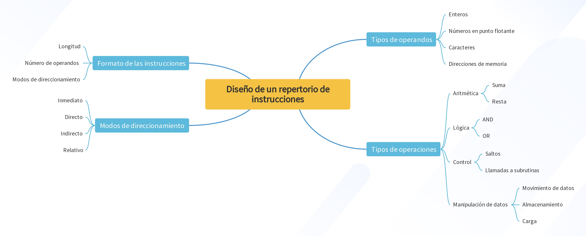
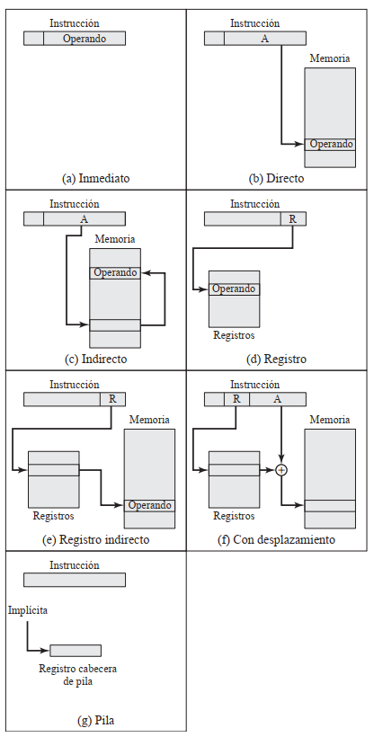
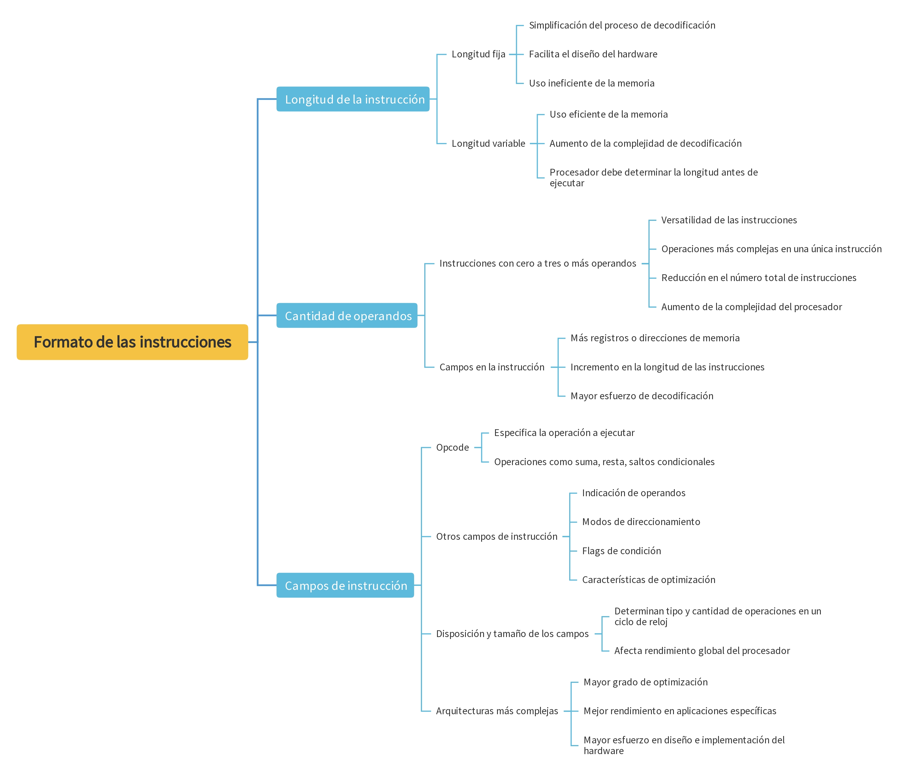

2.4 Repertorio de instrucciones
El repertorio de instrucciones, conocido como ISA (Instruction Set Architecture), define el conjunto de operaciones que un procesador puede ejecutar y cómo se codifican dichas operaciones. Este conjunto incluye instrucciones aritméticas, lógicas, de control y de manipulación de datos, así como los modos de direccionamiento y formatos de las instrucciones. El diseño de un ISA tiene un impacto considerable en el rendimiento, la eficiencia energética y la flexibilidad de la arquitectura de un procesador (Hennessy and Patterson 2012; Null and Lobur 2014; Stallings 2013).
Entre las características clave que deben considerarse en el diseño de un repertorio de instrucciones están las siguientes (Hennessy and Patterson 2012):
- Tipos de operandos: Se refiere a los diversos tipos de datos que las instrucciones pueden manipular, como enteros, números en punto flotante, caracteres o direcciones de memoria. Es crucial diseñar un repertorio de instrucciones que soporte eficientemente diferentes tipos de operando.
- Tipos de operaciones: Incluye las operaciones que el procesador puede realizar, como aritmética (suma, resta), lógica (AND, OR), control (saltos, llamadas a subrutinas) y operaciones de manipulación de datos (movimiento de datos, almacenamiento, carga).
- Formato de las instrucciones: La estructura de una instrucción determina la longitud, el número de operandos y los modos de direccionamiento, lo que impacta directamente en la complejidad y eficiencia del procesador.
- Modos de direccionamiento: Definen cómo se especifican los operandos en las instrucciones. Modos comunes incluyen inmediato, directo, indirecto y relativo, cada uno ofreciendo diferentes ventajas en términos de flexibilidad y eficiencia.

Figura 2.3: Características repertorio de instrucciones
2.4.1 Modos de direccionamiento
Los modos de direccionamiento son esenciales para especificar cómo la CPU accede a los datos necesarios para ejecutar una instrucción (Stallings 2013 ; Hennessy and Patterson 2012). Los modos más comunes incluyen:
- Inmediato: El operando está directamente incluido en la instrucción, lo que permite un acceso rápido a valores constantes, generalmente pequeños. Este modo es eficiente para operaciones simples, pero está limitado a operandos de tamaño reducido.
- Directo: La instrucción contiene la dirección de memoria del operando. Este modo es fácil de usar y entender, pero tiene la desventaja de que el rango de direcciones accesibles está limitado por el tamaño de la instrucción.
- Indirecto: La instrucción apunta a una dirección que, a su vez, contiene la dirección real del operando. Este modo ofrece una mayor flexibilidad al ampliar el rango de direcciones, aunque introduce una penalización en tiempo debido al acceso adicional a la memoria.
- Registro: El operando está ubicado en uno de los registros del procesador, lo que permite un acceso extremadamente rápido. Este modo es muy eficiente, ya que evita los accesos a la memoria, pero está limitado por el número de registros disponibles.
- Registro Indirecto: Similar al modo indirecto, pero en este caso la dirección del operando está almacenada en un registro. Esto combina la rapidez del acceso a registros con la flexibilidad del direccionamiento indirecto.
- Con Desplazamiento: Este modo combina una dirección base con un valor de desplazamiento, lo que resulta muy útil para trabajar con estructuras de datos como arrays. Permite un acceso eficiente a elementos contiguos en memoria.
- Pila: El operando se encuentra en la parte superior de la pila, y su dirección es calculada en base al puntero de la pila. Este modo es fundamental para la gestión de llamadas a subrutinas y el paso de parámetros en muchos lenguajes de programación.

Figura 2.4: Modos de direccionamiento
- A = contenido de un campo de dirección en la instrucción
- R = contenido de un campo de dirección en la instrucción que referencia a un registro
- EA = dirección real (efectiva) de la posición que contiene el operando que se referencia
La tabla 2.2 indica el cálculo de la dirección realizado para cada modo de direccionamiento.
| Modo | Algoritmo | Principal.ventaja | Principal.desventaja |
|---|---|---|---|
| Inmediato | Operando ← A | No referencia a memoria | Operando de magnitud limitada |
| Directo | EA ← A | Es sencillo | Espacio de direcciones limitado |
| Indirecto | EA ← (A) | Espacio de direcciones grande | Referencias múltiples a memoria |
| Registro | EA ← R | No referencia a memoria | Número limitado de registros |
| Indirecto con registro | EA ← (R) | Espacio de direcciones grande | Referencia extra a memoria |
| Con desplazamiento | EA ← A + (R) | Flexibilidad | Complejidad |
| Pila | EA ← cabecera de la pila | No referencia a memoria | Aplicabilidad limitada |
2.4.2 Formato de las instrucciones
El formato de las instrucciones establece cómo se estructuran las instrucciones que un procesador debe ejecutar, lo que incluye su longitud, la cantidad de operandos y los campos adicionales como el código de operación (opcode) (Hennessy and Patterson 2012 ; Tanenbaum 2013). Este formato no solo afecta la rapidez con la que las instrucciones pueden ser decodificadas, sino también el grado de flexibilidad del conjunto de instrucciones y el aprovechamiento de los recursos del procesador.
- Longitud de la instrucción: Las instrucciones pueden tener una longitud fija o variable, y esta decisión afecta tanto al diseño como al rendimiento del procesador. Las instrucciones de longitud fija simplifican el proceso de decodificación, ya que todas tienen el mismo tamaño, lo que facilita el diseño del hardware. Sin embargo, esto puede resultar en un uso ineficiente de la memoria cuando se utilizan instrucciones más simples que no requieren tanto espacio. En contraste, las instrucciones de longitud variable permiten un uso más eficiente de la memoria, ya que el tamaño de cada instrucción puede ajustarse a las necesidades de la operación. No obstante, esta flexibilidad aumenta la complejidad en la decodificación, ya que el procesador debe determinar primero la longitud de la instrucción antes de ejecutarla.
- Cantidad de operandos: Las instrucciones pueden trabajar con diferentes cantidades de operandos según la arquitectura del procesador, variando desde cero hasta tres o más. A mayor número de operandos, las instrucciones son más versátiles, permitiendo realizar operaciones más complejas en una única instrucción, lo que reduce el número total de instrucciones necesarias. Sin embargo, un mayor número de operandos también implica un aumento en la complejidad del procesador, ya que se necesitan más campos en la instrucción para especificar los operandos y más registros o direcciones de memoria para manejar los datos, lo cual puede incrementar la longitud de las instrucciones y el esfuerzo de decodificación.
- Campos de instrucción: Entre los campos clave que componen una instrucción, el opcode es el más relevante, ya que especifica la operación que el procesador debe ejecutar, como suma, resta o saltos condicionales. Además, las instrucciones pueden incluir otros campos para indicar los operandos, los modos de direccionamiento, y en arquitecturas más avanzadas, flags de condición o características de optimización, como la predicción de saltos o la ejecución fuera de orden. La disposición y el tamaño de estos campos determinan cuántas y qué tipo de operaciones puede realizar el procesador en un ciclo de reloj, afectando directamente su rendimiento global. En arquitecturas más complejas, los campos adicionales permiten un mayor grado de optimización, mejorando el rendimiento en aplicaciones específicas, aunque a costa de un mayor esfuerzo en el diseño y la implementación del hardware.

Figura 2.5: Formato de instrucciones
Bibliografía
Hennessy, John L, and David A Patterson. 2012. Computer Architecture: A Quantitative Approach. Fifth Edition. Elsevier.
Null, Linda, and Julia Lobur. 2014. Essentials of Computer Organization and Architecture. Jones & Bartlett Publishers.
Stallings, William. 2013. Computer Organization and Architecture: Designing for Performance. Eleventh Edition. Pearson.
Tanenbaum, Andrew S. 2013. Structured Computer Organization. Pearson Education.